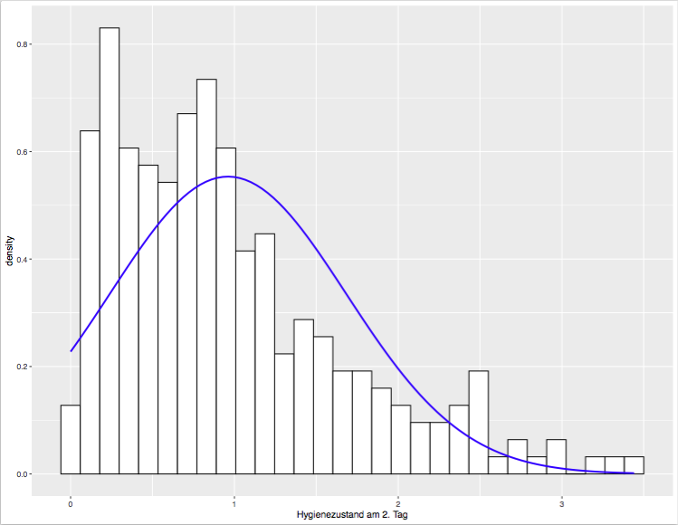
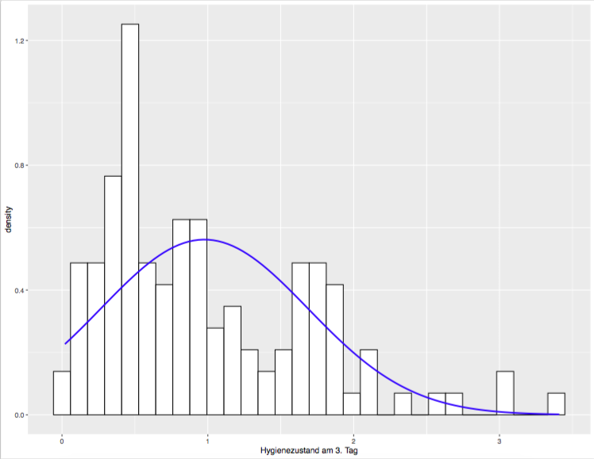

Chapter 9 Datenvisualisierungen III
9.1 Standardnormalverteilung
Annahme über erhobene Daten: \(\leftrightarrow\) Daten der erhobenen Stichprobe normalverteilt. Was heißt das?
- symmetrische Glockenkurve oder Gauß’sche Kurve
- bei vertikalem Schnitt durch Mittelwert \(\rightarrow\) angestrebt beide Seiten möglichst deckungsgleich
- Annahme: die meisten Daten liegen ungefähr um den Mittelpunkt
- Länge der Balken bei einem Histogramm werden kleiner, je weiter diese vom Mittelpunkt abweichen
- die Daten einer großen Stichprobe sind wahrscheinlicher normalverteilt.
- zusätzlich zur statistischen Überprüfung gibt es Möglichkeiten der visuellen Darstellung und Inspektion um einzuschätzen, ob die Daten einer Stichprobe normalverteilt sind.
9.2 Normalverteilung mit Histogram hist()
- Plot zeigt auf der x-Achse die Werte der erhobenen Daten an und auf y-Achse, wie oft diese Werte auftauchen

9.3 Normalverteilung: Schiefe
- Wir haben schon rechts- und linksschiefe Verteilungen besprochen.
- Schiefe Verteilungen sind nicht symmetrisch und somit nicht normalverteilt. Sie zeichnen sich dadurch aus, dass deren häufigste Werte entweder am rechten oder am linken Rand des Spektrums der Verteilungskurve liegen.
9.4 Normalverteilung Kurtosis
- Beschreibung Kurvigkeit der Verteilung
- Wie spitz ist die Kurve?
- Wie sehr verteilen sich die Werte an den äußeren Enden der Kurve?
leptokurtic (positive Kurtosis) ist eine spitze Kurve, viele Werte verteilen sich auch an den Enden
platykurtic (negative Kurtosis) flache Kurve, relativ wenige Werte an den Enden
- Schiefe und Kurtosis in einer Normalverteilung sollten 0 sein
- positive Kurtosis ist hier +4 und negative -1
9.5 Normalverteilung: Beispiel
Wir werden noch einmal mit dem Datensatz DownloadFestival1.dat arbeiten.
Dieser beschreibt:
- Einschätzung der persönlichen Hygiene von Teilnehmern über den Zeitram von 3 Tagen, die sie an einem Rockfestival teilnehmen - Spanne: 0-4 - 0: sehr schlecht (Geruch vergleichbar mit verwesender Leiche und einem Stinktier) - 4: sehr gut (Geruch vergleichbar süßer Rosen an einem frischen Frühlingstag)
df = read.delim("DownloadFestival1.dat", header = T)9.6 Plot Verteilung der Daten
library(ggplot2)
df = read.delim("DownloadFestival1.dat", header = T)
ggplot(df,aes(day1)) + geom_histogram(aes(y = ..density..), colour = "black", fill = "white") + labs(x = "Hygienezustand am 1. Tag")9.7 Plot Verteilung der Daten mit Kurve
library(ggplot2)
df = read.delim("DownloadFestival1.dat", header = T)
ggplot(df,aes(day1)) + geom_histogram(aes(y = ..density..), colour = "black", fill = "white") + labs(x = "Hygienezustand am 1. Tag") + stat_function(fun = dnorm, args = list(mean = mean(df$day1, na.rm = TRUE), sd = sd(df$day1, na.rm = TRUE)), colour = "blue", size = 1)- die stat_function() plottet noch eine Normalkurve mit den übergebenen Mittelwerten und Standardabweichungen von unseren Daten von Tag 1
9.8 Plot Verteilung der Daten von Tag 2
library(ggplot2)
df = read.delim("DownloadFestival1.dat", header = T)
ggplot(df,aes(day2)) + geom_histogram(aes(y = ..density..), colour = "black", fill = "white") + labs(x = "Hygienezustand am 2. Tag") + stat_function(fun = dnorm, args = list(mean = mean(df$day2, na.rm = TRUE), sd = sd(df$day2, na.rm = TRUE)), colour = "blue", size = 1)9.9 Plot Verteilung der Daten von Tag 3
library(ggplot2)
df = read.delim("DownloadFestival1.dat", header = T)
ggplot(df,aes(day3)) + geom_histogram(aes(y = ..density..), colour = "black", fill = "white") + labs(x = "Hygienezustand am 3. Tag") + stat_function(fun = dnorm, args = list(mean = mean(df$day3, na.rm = TRUE), sd = sd(df$day3, na.rm = TRUE)), colour = "blue", size = 1)9.10 Q-Q plot
- Der quantile-quantile Plot ist eine alternative Methode, um die Normalverteilung von Daten einzuschätzen
- qplot() plottet die kumulativen Werte unserer Daten gegen die kumulative Wahrscheinlichkeit der Normalverteilung \(\rightarrow\) Werte werden geordnet und mit erwarteten Werten verglichen
- wenn die Stichprobe tatsächlich normalverteilt ist \(\rightarrow\) dann erscheint der Plot als gerade Linie
library(psych)
df = read.delim("DownloadFestival1.dat", header = T)
qplot(sample = df$day1, stat = "qq")Darstellung der Verteilung am 1. Tag

|

|
|  |
|  |
9.11 Wiederholung describe() Funktion
Für diese Funktion braucht benötigt man das psych-Paket
install.packages("psych")
library(psych)#install.packages("psych")
library(psych)
df = read.delim("DownloadFestival1.dat", header = T)
# für Tag 1
describe(df$day1)## vars n mean sd median trimmed mad min max range skew kurtosis se
## X1 1 810 1.77 0.69 1.79 1.77 0.7 0.02 3.69 3.67 0 -0.42 0.02# für alle Tage
describe(cbind(df$day1,df$day2,df$day3))## vars n mean sd median trimmed mad min max range skew kurtosis se
## X1 1 810 1.77 0.69 1.79 1.77 0.70 0.02 3.69 3.67 0.00 -0.42 0.02
## X2 2 264 0.96 0.72 0.79 0.87 0.61 0.00 3.44 3.44 1.08 0.76 0.04
## X3 3 123 0.98 0.71 0.76 0.90 0.61 0.02 3.41 3.39 1.01 0.59 0.06# alternative Darstellung für alle 3 Tage
describe(df[,c("day1","day2","day3")])## vars n mean sd median trimmed mad min max range skew kurtosis se
## day1 1 810 1.77 0.69 1.79 1.77 0.70 0.02 3.69 3.67 0.00 -0.42 0.02
## day2 2 264 0.96 0.72 0.79 0.87 0.61 0.00 3.44 3.44 1.08 0.76 0.04
## day3 3 123 0.98 0.71 0.76 0.90 0.61 0.02 3.41 3.39 1.01 0.59 0.069.12 Verteilungen
Bitte ladet für das folgende Kapitel die Datei rexam1.dat bei studip herunter.
Der Daten beschreiben die Examensergebnisse der Studenten zweier Universitäten und sind wie folgt aufgeteilt:
- exam Examennoten in % nach dem 1. Jahr
- computer Computerfähigkeiten in %
- lecture Wieviel % der Vorlesungen besucht wurden
- numeracy numerische Fähigkeiten mit Maximum 15
- university 0: Duncetown University, 1: Sussex University
| Examenpunkte | Teilnahme an Vorlesung |
|---|---|
| Computerfertigkeiten | Numerische Fertigkeiten |
|---|---|
Computerfertigkeiten
Numerische Fähigkeiten
9.13 Verteilung: Examenspunkte
ggplot(rexam,aes(exam)) + geom_histogram(aes(y = ..density..), colour = "black", fill = "white") + labs(x = "Examenpunkte") + stat_function(fun = dnorm, args = list(mean = mean(rexam$exam, na.rm = TRUE), sd = sd(rexam$exam, na.rm = TRUE)), colour = "blue", size = 1)9.14 Vergleich mit der describe() Funktion
describe(rexam$exam)
describe(rexam$computer)
describe(rexam$lecture)
describe(rexam$numeracy)Wie sind die Daten jeweils verteilt?
- exam zeigt eine Verteilung mit zwei Spitzen: eine solche Verteilung wird auch bimodal genannt
- die Studenten sind entweder sehr gut oder nicht so gut. Es scheint keine große Anzahl durchschnittlicher Studenten zu geben.
9.15 Vergleich verschiedener Gruppen
by(data = rexam$exam, INDICES = rexam$uni, FUN = describe)Beispiel
dunce = subset(rexam, rexam$uni =="Duncetown University")
dunce = rexam[rexam$uni == "Duncetown University",]
sussex = subset(rexam,rexam$uni == "Sussex University")
sussex =rexam[rexam$uni == "Sussex University",]Was ist der Unterschied zwischen beiden Gruppen?
| Sussex | Duncehall |
|---|
9.16 Vergleich zwischen den Gruppen
Gibt es weitere Unterschiede zwischen den Gruppen?
- benutze die by() Funktion, um Teilnahme an Lehrveranstaltungen, Computerfähigkeit und Numerische Fähigkeit zwischen beiden Gruppen zu vergleichen
- Plotte die Histogramme mit Kurve für die jeweiligen Gruppen
9.17 Die rnorm() Funktion
- generiert Daten in Normalverteilung, die folgende Bedingungen erfüllen
- z.B.:
rnorm(n = 500, mean = 30, sd = 4)Der obige Befehl generiert eine Stichprobe mit 500 Werten, diese sind normalverteilt mit dem Mittelwert 30 und der Standardabweichung 4.
9.18 Hausaufgabe
Generiere eine Stichprobe der Größe 250, mit Mittelwert 10 und Standardabweichung 2. Plotte die Daten in einem Histogramm mit einer Kurve.
- Lade die Datei chickflick.dat von studip herunter und importiere diese in R!
- Schau Dir die Datei mit ihren Eigenschaften an! Was sind die Mittelwerte und Standardabweichungen für anxiety getrennt für Männer und Frauen?
- Berechne den Korrelationskoeffizienten p zwischen film1 und anxiety?
Welche Funktion ist hier angemessen und warum? - Stelle den Zusammenhang zwischen film1 und anxiety graphisch mit ggplot() dar!
- Versuche beide Gruppen (male \(\leftrightarrow\) female) bei der graphischen Darstellung von film1 und anxiety farblich voneinander abzuheben!
- Plotte den Zusammenhang zwischen film1 und anxiety für beide Gruppen male und female getrennt nebeneinander!
- Wie lassen sich die Daten interpretieren?